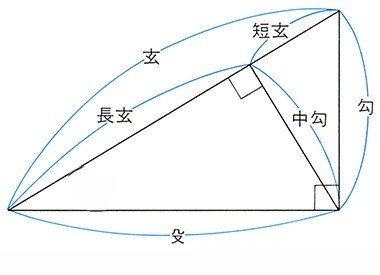

条件: 殳 = 10.0

投げ墨: 勾と裏目0.5(0.7071)
※いずれか3項目の入力必須
※本数は切り上げ計算のため内寸に誤差が出ます
※3項目の入力必須
※どちらかの入力必須
※どちらかの入力必須 (鉄砲部)
※求めたい項目を空欄にして計算ボタンを押してください（2項目以上の入力が必要）。
柱間の内寸と高さから、筋交の長さを計算します。
勾配（寸）または角度（度）を入力すると、もう一方の値を自動で計算します。